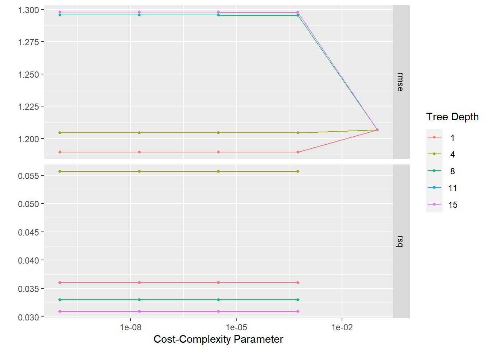

Nausea/Body Temperature: Machine Learning Modeling
Dawson Dobash
11/04/2021
For this exercise, we will be using tidymodels again but we will be doing machine learning models. The machine learning models we will be using are: tree modeling, LASSO modeling, and Random Forest modeling.
To find the full analysis on this data set, click on this link and it will take you to my github repository.
Data Preparation
We will be reading in the same data cleaned from the processing script and all of the packages needed.
#reading in needed packages
library(here)
library(tidymodels)
library(dplyr)
library(tableone)
library(rpart)##
## Attaching package: 'rpart'## The following object is masked from 'package:dials':
##
## prunelibrary(glmnet)## Loading required package: Matrix##
## Attaching package: 'Matrix'## The following objects are masked from 'package:tidyr':
##
## expand, pack, unpack## Loaded glmnet 4.1-3library(ranger)
library(rpart.plot)
#path to data
data_location <- here::here("files" ,"processeddata.rds")
#load data.
data <- readRDS(data_location)After reading in the data, we need to remove the extra variables and making variables weakness, cough intensity, and myalgia ordered.
#removing the binomial variables and ordering the other ordinal variables
data2 <- data %>% select(-CoughYN, -CoughYN2, -WeaknessYN, -MyalgiaYN) %>% mutate(Weakness = factor(Weakness, levels = c("None", "Mild", "Moderate", "Severe"), ordered = TRUE),
CoughIntensity = factor(CoughIntensity, levels = c("None", "Mild", "Moderate", "Severe"), ordered = TRUE),
Myalgia = factor(Myalgia, levels = c("None", "Mild", "Moderate", "Severe"), ordered = TRUE))We need to remove the variables that have less than 50 observations of one category. To do this, we need to find counts for each variable and then remove these variables.
#Using summary to look at variable counts
summary(data2)## SwollenLymphNodes ChestCongestion ChillsSweats NasalCongestion Sneeze
## No :418 No :323 No :130 No :167 No :339
## Yes:312 Yes:407 Yes:600 Yes:563 Yes:391
##
##
##
##
## Fatigue SubjectiveFever Headache Weakness CoughIntensity
## No : 64 No :230 No :115 None : 49 None : 47
## Yes:666 Yes:500 Yes:615 Mild :223 Mild :154
## Moderate:338 Moderate:357
## Severe :120 Severe :172
##
##
## Myalgia RunnyNose AbPain ChestPain Diarrhea EyePn Insomnia
## None : 79 No :211 No :639 No :497 No :631 No :617 No :315
## Mild :213 Yes:519 Yes: 91 Yes:233 Yes: 99 Yes:113 Yes:415
## Moderate:325
## Severe :113
##
##
## ItchyEye Nausea EarPn Hearing Pharyngitis Breathless ToothPn
## No :551 No :475 No :568 No :700 No :119 No :436 No :565
## Yes:179 Yes:255 Yes:162 Yes: 30 Yes:611 Yes:294 Yes:165
##
##
##
##
## Vision Vomit Wheeze BodyTemp
## No :711 No :652 No :510 Min. : 97.20
## Yes: 19 Yes: 78 Yes:220 1st Qu.: 98.20
## Median : 98.50
## Mean : 98.94
## 3rd Qu.: 99.30
## Max. :103.10#Based on what the summary said, remove hearing and vision as one of the categories are less than 50 observations.
data2 <- data2 %>% select(-Hearing, -Vision)Data Analysis
Setting up the analysis portion
To set up the analysis, we need to create a split between the training data and the testing data. After creating the two samples, we also need to make a cross-validation fold.
set.seed(123)
#splitting the data 0.7 to training and 0.3 to testing
split_data2 = initial_split(data2, prop = 0.7, strata = BodyTemp)
test_data = testing(split_data2)
train_data = training(split_data2)
#creating a cross-validation 5-fold
cvfold_data = vfold_cv(train_data, v = 5, repeats = 5, strata = BodyTemp)Next we are making a recipe to display a full model for predicting body temperature. The step_dummy function is used to make all of the nominal predictors into dummy variables so it is easier to work with these varaibles.
lm_mod <- linear_reg() %>% set_engine("lm")
#creating a recipe for the full model where all nominal predictors will be dummy variables
BT_rec <- recipe(BodyTemp~ . ,data=train_data ) %>% step_dummy(all_nominal_predictors())Null model performance
A null model is just a model with no predictors and it displays the mean value of body temperature. This model should be the weakest model in predicting the body temperature. This will be later compared to the more tuned models created by machine learning techniques. We are creating a workflow which includes its own recipe and then computing the rmse for each training set and testing set. We can see that for the training set, teh rmse is around 1.21 while the testing is around the 1.16 value. These two values are spread apart a lot meaning the fit is not really good.
#creating a recipe for the null model
nulltrain_rec <- recipe(BodyTemp~ 1, data = train_data)
#creating a workflow for the null model and then creating a fit object for this model so we can looking at some diagnostics
nulltrain_wrkflow <- workflow() %>% add_model(lm_mod) %>% add_recipe(nulltrain_rec)
nulltrain_fit <- nulltrain_wrkflow %>% fit(data=train_data)
#We are augmenting for both the train and test data and then finding each rmse
augment(nulltrain_fit, train_data) %>% rmse(truth = BodyTemp, .pred)## # A tibble: 1 x 3
## .metric .estimator .estimate
## <chr> <chr> <dbl>
## 1 rmse standard 1.21augment(nulltrain_fit, test_data) %>% rmse(truth = BodyTemp, .pred)## # A tibble: 1 x 3
## .metric .estimator .estimate
## <chr> <chr> <dbl>
## 1 rmse standard 1.16Model tuning and fitting
Fitting a tree
The first type of ML tuning is using a simple tree. For this tree, we need to have multiple components. The first is specifying the specific type of model to use. This code below is creating the tree model and to look at a regression type of outcome not a classification.
#Creating the tree specification for a regression type of outcome
tune_spec <-
decision_tree(
cost_complexity = tune(),
tree_depth = tune()
) %>%
set_engine("rpart") %>%
set_mode("regression")
#creating a tree grid
tree_grid <- grid_regular(cost_complexity(),
tree_depth(),
levels = 5)The next part is to create a workflow for the tree modeling. This is similar to how we previously specified workflows as there is a model and recipe needed. The model is the specification created above and the recipe is our full model recipe for body temperature. Next we will apply our cross-validation 5-fold data in terms of tuning with a grid. This will create multiple models that will hopefully find a better model than the null model. A snapshot of the models created are showed below.
#Making a wirkflow for the tree models. This uses the tuning specification above as the model type and the full model for body temperature as the recipe
tree_wf <- workflow() %>%
add_model(tune_spec) %>%
add_recipe(BT_rec)
#We re resampling the tree workflow by using the tune grid function and our cross-validation 5-fold data
tree_res <-
tree_wf %>%
tune_grid(
resamples = cvfold_data,
grid = tree_grid
)## ! Fold1, Repeat1: internal: A correlation computation is required, but `estimate` is const...## ! Fold2, Repeat1: internal: A correlation computation is required, but `estimate` is const...## ! Fold3, Repeat1: internal: A correlation computation is required, but `estimate` is const...## ! Fold4, Repeat1: internal: A correlation computation is required, but `estimate` is const...## ! Fold5, Repeat1: internal: A correlation computation is required, but `estimate` is const...## ! Fold1, Repeat2: internal: A correlation computation is required, but `estimate` is const...## ! Fold2, Repeat2: internal: A correlation computation is required, but `estimate` is const...## ! Fold3, Repeat2: internal: A correlation computation is required, but `estimate` is const...## ! Fold4, Repeat2: internal: A correlation computation is required, but `estimate` is const...## ! Fold5, Repeat2: internal: A correlation computation is required, but `estimate` is const...## ! Fold1, Repeat3: internal: A correlation computation is required, but `estimate` is const...## ! Fold2, Repeat3: internal: A correlation computation is required, but `estimate` is const...## ! Fold3, Repeat3: internal: A correlation computation is required, but `estimate` is const...## ! Fold4, Repeat3: internal: A correlation computation is required, but `estimate` is const...## ! Fold5, Repeat3: internal: A correlation computation is required, but `estimate` is const...## ! Fold1, Repeat4: internal: A correlation computation is required, but `estimate` is const...## ! Fold2, Repeat4: internal: A correlation computation is required, but `estimate` is const...## ! Fold3, Repeat4: internal: A correlation computation is required, but `estimate` is const...## ! Fold4, Repeat4: internal: A correlation computation is required, but `estimate` is const...## ! Fold5, Repeat4: internal: A correlation computation is required, but `estimate` is const...## ! Fold1, Repeat5: internal: A correlation computation is required, but `estimate` is const...## ! Fold2, Repeat5: internal: A correlation computation is required, but `estimate` is const...## ! Fold3, Repeat5: internal: A correlation computation is required, but `estimate` is const...## ! Fold4, Repeat5: internal: A correlation computation is required, but `estimate` is const...## ! Fold5, Repeat5: internal: A correlation computation is required, but `estimate` is const...#This is showing the various models created by the tree
tree_res %>%
collect_metrics()## # A tibble: 50 x 8
## cost_complexity tree_depth .metric .estimator mean n std_err .config
## <dbl> <int> <chr> <chr> <dbl> <int> <dbl> <chr>
## 1 0.0000000001 1 rmse standard 1.19 25 0.0181 Prepro~
## 2 0.0000000001 1 rsq standard 0.0361 25 0.00422 Prepro~
## 3 0.0000000178 1 rmse standard 1.19 25 0.0181 Prepro~
## 4 0.0000000178 1 rsq standard 0.0361 25 0.00422 Prepro~
## 5 0.00000316 1 rmse standard 1.19 25 0.0181 Prepro~
## 6 0.00000316 1 rsq standard 0.0361 25 0.00422 Prepro~
## 7 0.000562 1 rmse standard 1.19 25 0.0181 Prepro~
## 8 0.000562 1 rsq standard 0.0361 25 0.00422 Prepro~
## 9 0.1 1 rmse standard 1.21 25 0.0177 Prepro~
## 10 0.1 1 rsq standard NaN 0 NA Prepro~
## # ... with 40 more rowsNow that we have created our tree, we can look at the results the first plot shows the different trees made and the resulting rmse’s for each. The next table is showing which model between the different trees performed the best in terms of the lowest rmse which results in model 1.
#The autoplot function shows basically the process of the tuning process
tree_res %>% autoplot()
#selecting the best tree with the lowest rmse
best_tree <- tree_res %>%
select_best("rmse")
best_tree## # A tibble: 1 x 3
## cost_complexity tree_depth .config
## <dbl> <int> <chr>
## 1 0.0000000001 1 Preprocessor1_Model01#putting in the best tree found into its own workflow
final_wf_tree <-
tree_wf %>%
finalize_workflow(best_tree)
#fitting the tree data into a fit object
tree_fit <- final_wf_tree %>% fit(data=train_data)
#augment(tree_fit, train_data) %>% rmse(truth = BodyTemp, .pred)We plotted what the actual tree looks like. We also plotted a scatterplot of the predicted values versus the actual values, and a residual plot for this model. We can see that this tree does not really have a goot fit as the values only are on two discrete predicted values and this also shows on the residual plot as well.
#This displays the tree
rpart.plot(extract_fit_parsnip(tree_fit)$fit)## Warning: Cannot retrieve the data used to build the model (model.frame: object '..y' not found).
## To silence this warning:
## Call rpart.plot with roundint=FALSE,
## or rebuild the rpart model with model=TRUE.
#We are augenting the tree fit object with the train data to help produce a mean rmse
aug_tree <- augment(tree_fit, train_data) %>% mutate(residual = BodyTemp - .pred)
#This is a scatterplot showing the predicted values versus the actual values of body temperature
tree_predvsobs_plot <- aug_tree %>% ggplot(aes(x=BodyTemp, y=.pred)) + geom_point() + geom_abline(intercept = 0, slope=1) + ggtitle("Scatterplot of predicted values versus the observed values of body temperature \n with a reference line showing exact prediction \n (for Tree model)")
tree_predvsobs_plot
#This is showing the residual plot
tree_resid_plot <- aug_tree %>% ggplot(aes(x=.pred, y=residual)) + geom_point() + geom_hline(yintercept = 0) + ggtitle("Residual plot for Tree model")
tree_resid_plot
From the plots, we saw that the tree does not good a great job on predicting the body temperature but compared to the null model, the mean rmse and standard error for the tree is 1.189 and 0.018 respectively compared to the null models rmse of 1.209. There is a slight improvement as the rmse descreased.
#comparing the tree models with the null model
tree_res %>% show_best(n=1)## Warning: No value of `metric` was given; metric 'rmse' will be used.## # A tibble: 1 x 8
## cost_complexity tree_depth .metric .estimator mean n std_err .config
## <dbl> <int> <chr> <chr> <dbl> <int> <dbl> <chr>
## 1 0.0000000001 1 rmse standard 1.19 25 0.0181 Preprocesso~augment(nulltrain_fit, train_data) %>% rmse(truth = BodyTemp, .pred)## # A tibble: 1 x 3
## .metric .estimator .estimate
## <chr> <chr> <dbl>
## 1 rmse standard 1.21Fitting a LASSO model
The next type of model we will be looking at is the LASSO model. It has a similar set up to the tree as we set a specific model type and then use it in a workflow for LASSO. the recipe is the same full model for body temperature.
#Creating the lasso model type. This uses the glmnet engine
lr_mod <-
linear_reg(penalty = tune(), mixture = 1) %>%
set_engine("glmnet")
#We are setting the LASSO workflow which similar to the tree, it uses the full model for the recipe and then the specific LASSO model I just made
lr_workflow <-
workflow() %>%
add_model(lr_mod) %>%
add_recipe(BT_rec)We need to create a grid for tuning again using the cross-validation 5-fold data. This will eventually create the multiple LASSO models to compare and find the best performing one by rmse. A snapshot of the models created are showed below.
#creating a grid for the LASSO
lr_reg_grid <- tibble(penalty = 10^seq(-4, -1, length.out = 30))
#Using tune grid to help create the tuning process using the cross-validation 5-fold
lr_res <-
lr_workflow %>%
tune_grid(cvfold_data,
grid = lr_reg_grid,
control = control_grid(save_pred = TRUE),
metrics = metric_set(rmse))
#Looking at all of the models created by the LASSO model
lr_res %>%
collect_metrics()## # A tibble: 30 x 7
## penalty .metric .estimator mean n std_err .config
## <dbl> <chr> <chr> <dbl> <int> <dbl> <chr>
## 1 0.0001 rmse standard 1.18 25 0.0167 Preprocessor1_Model01
## 2 0.000127 rmse standard 1.18 25 0.0167 Preprocessor1_Model02
## 3 0.000161 rmse standard 1.18 25 0.0167 Preprocessor1_Model03
## 4 0.000204 rmse standard 1.18 25 0.0167 Preprocessor1_Model04
## 5 0.000259 rmse standard 1.18 25 0.0167 Preprocessor1_Model05
## 6 0.000329 rmse standard 1.18 25 0.0167 Preprocessor1_Model06
## 7 0.000418 rmse standard 1.18 25 0.0167 Preprocessor1_Model07
## 8 0.000530 rmse standard 1.18 25 0.0167 Preprocessor1_Model08
## 9 0.000672 rmse standard 1.18 25 0.0167 Preprocessor1_Model09
## 10 0.000853 rmse standard 1.18 25 0.0167 Preprocessor1_Model10
## # ... with 20 more rowsThe first plot shows the transition from the tuning to finding the model with the lowest rmse and we see that the model with the lowest rmse is model 28. With a preview of the actual value we can see that the rmse is around 1.153 which is smaller than the Tree estimate. This was selected by the select_best function and specifying it to looking at rmse. We then used this best model into a new workflow which will be used to create a fit object to show the value of rmse.
#The autoplot function shows basically the process of the tuning process
lr_res %>% autoplot()
#This is finding the best model with the lowest rmse
lr_best <-
lr_res %>%
show_best("rmse", n=1)
lr_best## # A tibble: 1 x 7
## penalty .metric .estimator mean n std_err .config
## <dbl> <chr> <chr> <dbl> <int> <dbl> <chr>
## 1 0.0621 rmse standard 1.15 25 0.0169 Preprocessor1_Model28#Creating a workflow that only included the best model
final_wf_lr <-
lr_workflow %>%
finalize_workflow(lr_best)
#creating a fit object to help show the predictions of each body temp
lr_fit <- final_wf_lr %>% fit(data=train_data)
#augment(lr_fit, train_data) %>% rmse(truth = BodyTemp, .pred)The first plot shows the actual LASSO models. The second and third plots show the predicted values vserus actual values and the the residual plot. From the predicted versus actual, we can see a way better plot than the tree one as there is no discrete values. With the line being the slope of 1, this would be the exact prediction of a body temperature. Threre is still some spread of the data but way better than the tree model. We can also see the more easily in the residual plot. It looks like the model has a harder time modeling for the larger temperatures as it undervalues those higher temperatures.
#Plotting the LASSO model
x <- lr_fit$fit$fit$fit
plot(x, "lambda")
#Creating the residuals and displaying the scatterplot of the predicted values to the observed values of body temp using LASSO
aug_lr <- augment(lr_fit, train_data) %>% mutate(residual = BodyTemp - .pred)
lr_predvsobs_plot <- aug_lr %>% ggplot(aes(x=BodyTemp, y=.pred)) + geom_point() + geom_abline(intercept = 0, slope=1) + ggtitle("Scatterplot of predicted values versus the observed values of body temperature \n with a reference line showing exact prediction \n (for LASSO model)")
lr_predvsobs_plot
#Residual plot
lr_resid_plot <- aug_lr %>% ggplot(aes(x=.pred, y=residual)) + geom_point() + geom_hline(yintercept = 0) + ggtitle("Residual plot for LASSO model")
lr_resid_plot
To compare the best LASSO model to the null model, we can see the mean rmse is way smaller than the null rmse, 1.153 and 1.209, respectively. We can also see that the standard error for the LASSO model is also very small with a value of 0.0169. The LASSO model did a better job than the tree model.
#comparing the rmse from the LASSO model to the null model
lr_res %>% show_best(n=1)## # A tibble: 1 x 7
## penalty .metric .estimator mean n std_err .config
## <dbl> <chr> <chr> <dbl> <int> <dbl> <chr>
## 1 0.0621 rmse standard 1.15 25 0.0169 Preprocessor1_Model28augment(nulltrain_fit, train_data) %>% rmse(truth = BodyTemp, .pred)## # A tibble: 1 x 3
## .metric .estimator .estimate
## <chr> <chr> <dbl>
## 1 rmse standard 1.21Fitting a random forest
The final type of model is the random forest approach. Just like the other two models, we hve to start with a model type specific to random forest for a regression outcome and apply it to a workflow. This workflow will be used to create a tuning grid that will create multiple models to find the best performing one. A snapshot of the models created are showed below.
cores <- parallel::detectCores()
cores## [1] 8#Creating the random forest model and specifying regression as the mode
rf_mod <-
rand_forest(mtry = tune(), min_n = tune(), trees = 1000) %>%
set_engine("ranger", num.threads = cores) %>%
set_mode("regression")
#creating the workflow using the random forest model as our model and once again using the full model as our recipe
rf_workflow <-
workflow() %>%
add_model(rf_mod) %>%
add_recipe(BT_rec)
#Creating the tune grid for random forest using the cross-validation 5-fold
rf_res <-
rf_workflow %>%
tune_grid(cvfold_data,
grid = 25,
control = control_grid(save_pred = TRUE),
metrics = metric_set(rmse))## i Creating pre-processing data to finalize unknown parameter: mtry#Looking at the models created by random forest
rf_res %>%
collect_metrics()## # A tibble: 25 x 8
## mtry min_n .metric .estimator mean n std_err .config
## <int> <int> <chr> <chr> <dbl> <int> <dbl> <chr>
## 1 2 16 rmse standard 1.17 25 0.0167 Preprocessor1_Model01
## 2 29 24 rmse standard 1.19 25 0.0166 Preprocessor1_Model02
## 3 21 39 rmse standard 1.18 25 0.0167 Preprocessor1_Model03
## 4 30 26 rmse standard 1.19 25 0.0167 Preprocessor1_Model04
## 5 18 33 rmse standard 1.18 25 0.0167 Preprocessor1_Model05
## 6 14 32 rmse standard 1.17 25 0.0167 Preprocessor1_Model06
## 7 11 5 rmse standard 1.20 25 0.0165 Preprocessor1_Model07
## 8 8 18 rmse standard 1.17 25 0.0164 Preprocessor1_Model08
## 9 6 15 rmse standard 1.17 25 0.0164 Preprocessor1_Model09
## 10 16 23 rmse standard 1.18 25 0.0166 Preprocessor1_Model10
## # ... with 15 more rowsThe first plot shows some of the processes from tuning the random forest models. The table shows which model is the bet model created by the random forest process. We can see that model 21 is the best. This was selected by the select_best function and specifying it to looking at rmse. We then used this best model into a new workflow which will be used to create a fit object to show the value of rmse.
#The autoplot function shows basically the process of the tuning process
rf_res %>% autoplot()
#This is finding the best model with the lowest rmse
rf_best <-
rf_res %>%
select_best(metric = "rmse")
rf_best## # A tibble: 1 x 3
## mtry min_n .config
## <int> <int> <chr>
## 1 6 35 Preprocessor1_Model20#making a workflow that only contains the best model
final_wf_rf <-
rf_workflow %>%
finalize_workflow(rf_best)
#Creating a fit object to eventuall use to find the rmse value and other predicted values for each body temperature
rf_fit <- final_wf_rf %>% fit(data=train_data)
#augment(rf_fit, train_data) %>% rmse(truth = BodyTemp, .pred)Below shows the predicted values versus actual values plot as well as the residual plot. We can see that the plot is slightly better than the LASSO model and if we look specifically at the residual plot, it looks more around 0. However, the underestimating of the higher body temperature is still present even in the random forest modeling.
#creating residuals
aug_rf <- augment(rf_fit, train_data) %>% mutate(residual = BodyTemp - .pred)
#fitting a predicted versus actual values plot for random forest
rf_predvsobs_plot <- aug_rf %>% ggplot(aes(x=BodyTemp, y=.pred)) + geom_point() + geom_abline(intercept = 0, slope=1) + ggtitle("Scatterplot of predicted values versus the observed values of body temperature \n with a reference line showing exact prediction \n (for Random Forest model)")
rf_predvsobs_plot
#residual plot
rf_resid_plot <- aug_rf %>% ggplot(aes(x=.pred, y=residual)) + geom_point() + geom_hline(yintercept = 0) + ggtitle("Residual plot for Random Forest model")
rf_resid_plot
If we compare the mean rmse from the random forest modeling to the null, we can see that the rmse for the random forest is a lot smaller than the null, 1.165 compared to 1.209. We can also see the standard error is also very small with a value of 0.0165 for random forest.
#comparing the rmse from random forest to the null model
rf_res %>% show_best(n=1)## # A tibble: 1 x 8
## mtry min_n .metric .estimator mean n std_err .config
## <int> <int> <chr> <chr> <dbl> <int> <dbl> <chr>
## 1 6 35 rmse standard 1.16 25 0.0166 Preprocessor1_Model20augment(nulltrain_fit, train_data) %>% rmse(truth = BodyTemp, .pred)## # A tibble: 1 x 3
## .metric .estimator .estimate
## <chr> <chr> <dbl>
## 1 rmse standard 1.21Model Selection
I decided the model I will be using will be the LASSO model. Compared to Tree model, I dont like how the predicted outcomes are two discrete values. This makes the rmse higher and honestly too close to the null model’s performance. Comparing the LASSO and random forest models, both performed better than the tree and honestly pretty similar to each other. Therefore, the my next step would be looking at how complex each model is. Once we compare that, we know that random forest is more complex meaning harder to interpret as it combined multiple trees. Another difference between these two model is that one is linear and the other is non-linear. I am more familiar with linear and it is easier to interpret. Therefore, the LASSO model is going to be the model I choose.
To do my final model analysis, I did a fit to my testing data to see if it corresponds to my results I get from using the testing data and cross-validation 5-fold data. I used the last_fit function to create the fit to my test data. We can see that the rmse’s are practically the same with a value of around 1.153. We then created the predicted versus observed value plot and the corresponding residual plot to go with it and we can see that it is still good but does not cover the trend too much. It also still shows it does not model the higher body temperature values well still.
lr_test_fit <- final_wf_lr %>% last_fit(split=split_data2, metrics=metric_set(rmse))
#Comparing my test data rmse to the other best model data
lr_test_fit %>%
collect_metrics()## # A tibble: 1 x 4
## .metric .estimator .estimate .config
## <chr> <chr> <dbl> <chr>
## 1 rmse standard 1.15 Preprocessor1_Model1lr_res %>% show_best(n=1)## # A tibble: 1 x 7
## penalty .metric .estimator mean n std_err .config
## <dbl> <chr> <chr> <dbl> <int> <dbl> <chr>
## 1 0.0621 rmse standard 1.15 25 0.0169 Preprocessor1_Model28#Creating the augment to show the predicted values for each observation
lr_test_res <- lr_test_fit %>% augment()
#Scatterplot for predicted versus actual values
lr_predvsobs_test_plot <- lr_test_res %>% ggplot(aes(x=BodyTemp, y=.pred)) + geom_point() + geom_abline(intercept = 0, slope=1) + ggtitle("Scatterplot of predicted values versus the observed values of body temperature \n with a reference line showing exact prediction \n (for LASSO model using test data)")
lr_predvsobs_test_plot
#Residual plot
lr_resid_test_plot <- lr_test_res %>% ggplot(aes(x=.pred, y=.resid)) + geom_point() + geom_hline(yintercept = 0) + ggtitle("Residual plot for LASSO model \n (using test data)")
lr_resid_test_plot